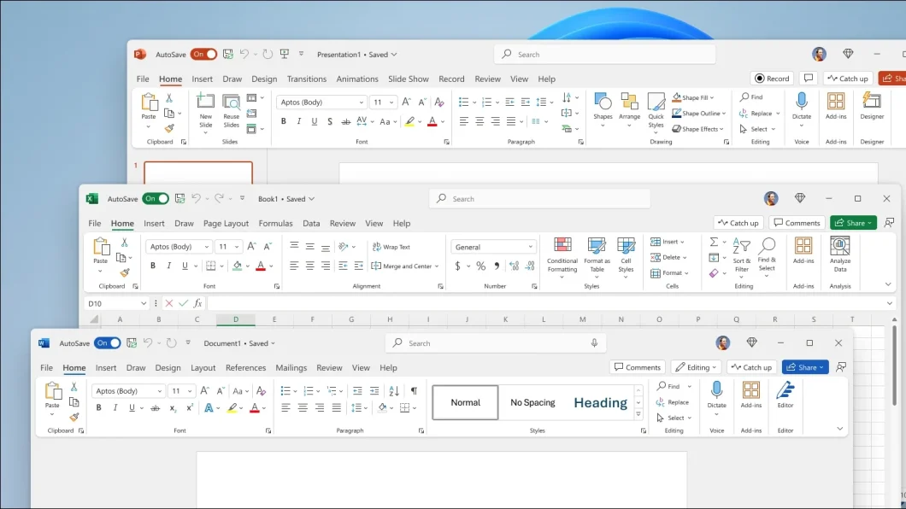

Microsoft lança Office 2024 sem assinatura; saiba o preço
Postado 04 outubro 2024

A Microsoft liberou o Office 2024, com licença vitalícia ao valor de R$ 749 pela versão Home. Ela é a mais barata e conta com Word, Excel, PowerPoint e OneNote. Já o Outlook só está presente na versão mais cara, a Home & Business, que custa R$ 1.989 e inclui direitos para uso comercial dos aplicativos.
O pacote é o primeiro lançado em três anos e serve como alternativa para quem não quer assinar o Microsoft 365. Em tempos de aplicativos atualizados com frequência, vale dizer: o Office 2024 não receberá recursos adicionais. Mesmo assim, terá correções de bugs e problemas de segurança até 9 de outubro de 2029.
Em comparação, o Microsoft 365 recebe updates em um ritmo constante. Prova disso é que muitas das novidades que chegam agora para o Office 2024 já estavam disponíveis para os assinantes há algum tempo.
Novo design e mais ferramentas
O pacote agora conta com uma nova interface, seguindo os princípios do Fluent Design, já presentes no Windows 11. Também há melhorias na acessibilidade.
O Excel tem novas funções para usar textos e matrizes. Outra função é capaz de puxar imagens da internet. Gráficos podem usar como base matrizes dinâmicas, com atualizações automáticas dos dados.
O PowerPoint ganhou uma ferramenta para incluir um vídeo ao vivo em um slide. Outro recurso permite fazer gravações, incluindo narração, animações, transições e rabiscos. Em acessibilidade, o app ganhou opção para incluir legendas para áudios e vídeos.
Word, Excel e PowerPoint também vão facilitar o processo de inserir fotos que estão em um aparelho Android. Outra novidade é o suporte à versão 1.4 do formato OpenDocument.
No Word e no PowerPoint, agora é possível curtir e reagir a comentários nos documentos e apresentações. E o Word poderá recuperar documentos, caso seu computador trave ou desligue sozinho, ou mesmo caso o programa seja fechado acidentalmente. Por fim, o OneNote 2024 terá novas ferramentas para anotações e desenhos.
Compatibilidade
O Office 2024 é compatível com o Windows 10 e o Windows 11. No primeiro caso, porém, a Microsoft nota que o suporte ao Windows 10 está programado para ser encerrado em 14 de outubro de 2025, o que encerraria também o suporte aos programas.
O pacote também é compatível com as três versões mais recentes do macOS — macOS 13 Ventura, macOS 14 Sonoma e macOS 15 Sequoia.
Para instalar o programa, é necessário ter uma conta Microsoft e uma conexão de internet. A licença pode ser usada em somente um computador.
Voltar